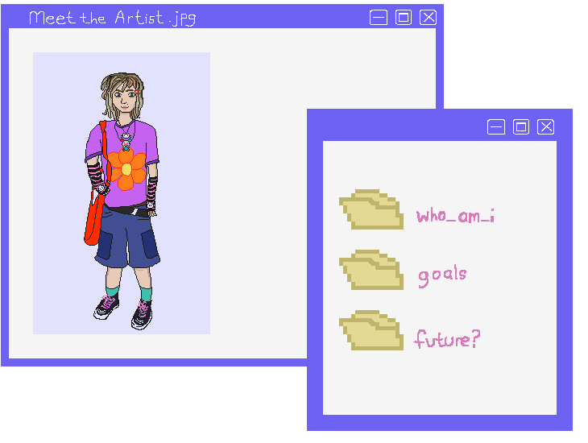

I am a 19-year old full-time Art (Digital Design) Student with a passion for character design, concept art, game art and animation.
Currently, I am focused in both my academic and personal projects, where  I aim to develop characters and stories that have deep, emotional and in-depth storytelling, no matter who they are. Whether in a fantasy world or a modern-day setting, I strive to create stories and characters that resonate with audiences.
After earning my diploma, I aim to study for a degree in Game Art in order to gain more experience in the creative industry.